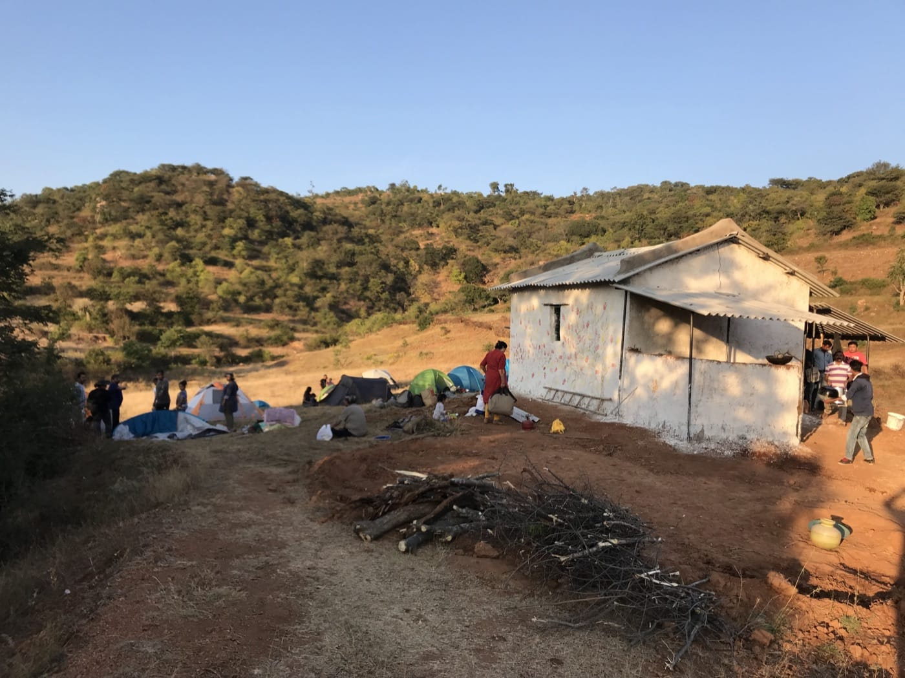
2018
First structure
A mud hut, built entirely by hand, went up. The community held its first camp-site stay.
Founding, 2017–2026
Earthwork by earthwork, one workshop, one season: the soil slowly remembered its reason.
2017
TVC began as a seed idea from a group who wanted to live sustainably as a community. WeCommunities came on as the real-estate development partner, its very first project. The group chose a site in Tamil Nadu near the village of Thaggatti, starting with ten members.
March 2017: first visit to the site. The land was barren, its topsoil stripped of organic matter. By July, planting had begun in a small plot set aside for trees, with Biome Environmental Solutions and Ananas on board as design and permaculture consultants.
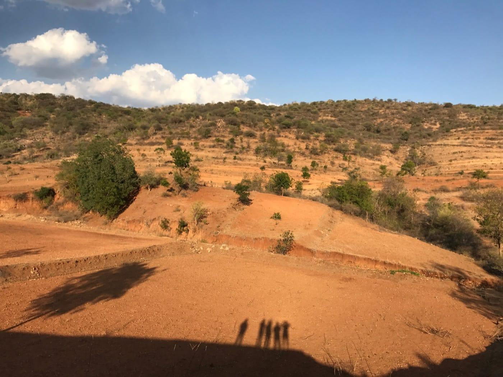
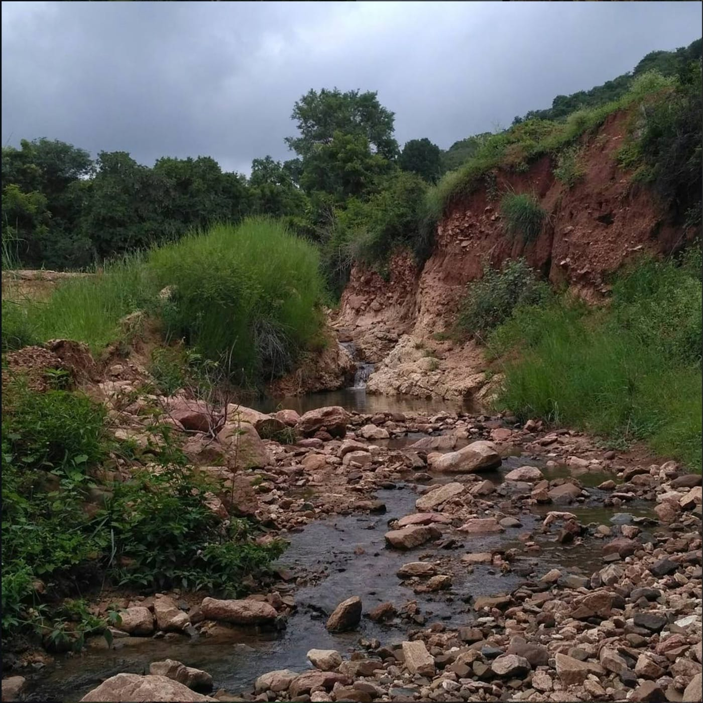
October 2017
An unusually heavy north-east monsoon washed away June's earthwork and much of what had just been planted. Nearby stations logged 20 to 40mm of rain within single 24-hour periods. It would not be the last time the land pushed back.
2018–2021
A structure, an identity, power, and the first animal on the land.

2018
A mud hut, built entirely by hand, went up. The community held its first camp-site stay.
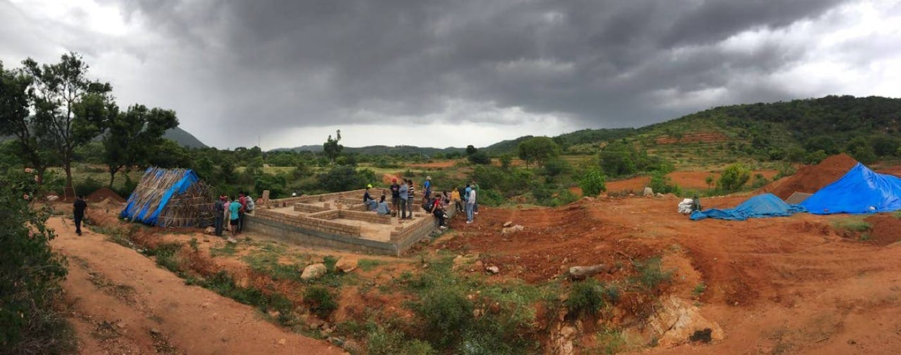
2018
Construction began on the first farmer's quarters.
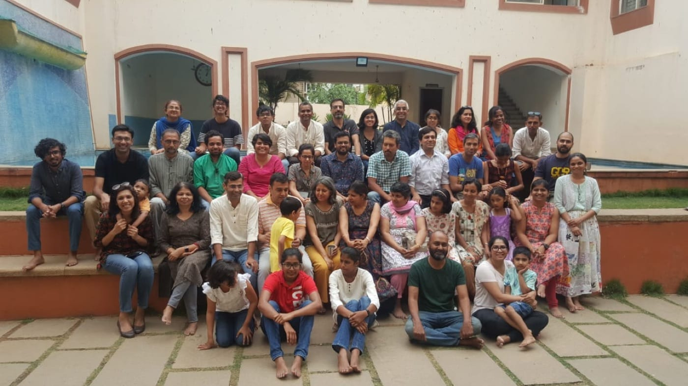
2019
Ananas delivered TVC's first GAIA Map. Madhavan joined that July as Farm Manager.
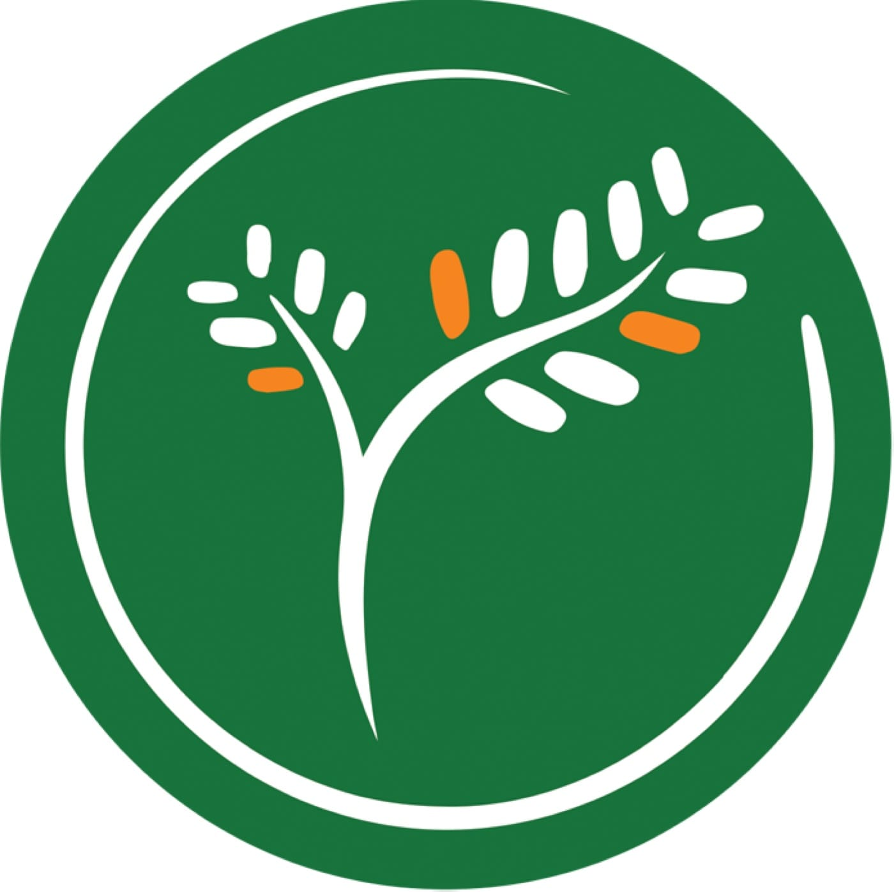
2019
After member Sunita's first renders in November, TVC's current logo was finalized in December.
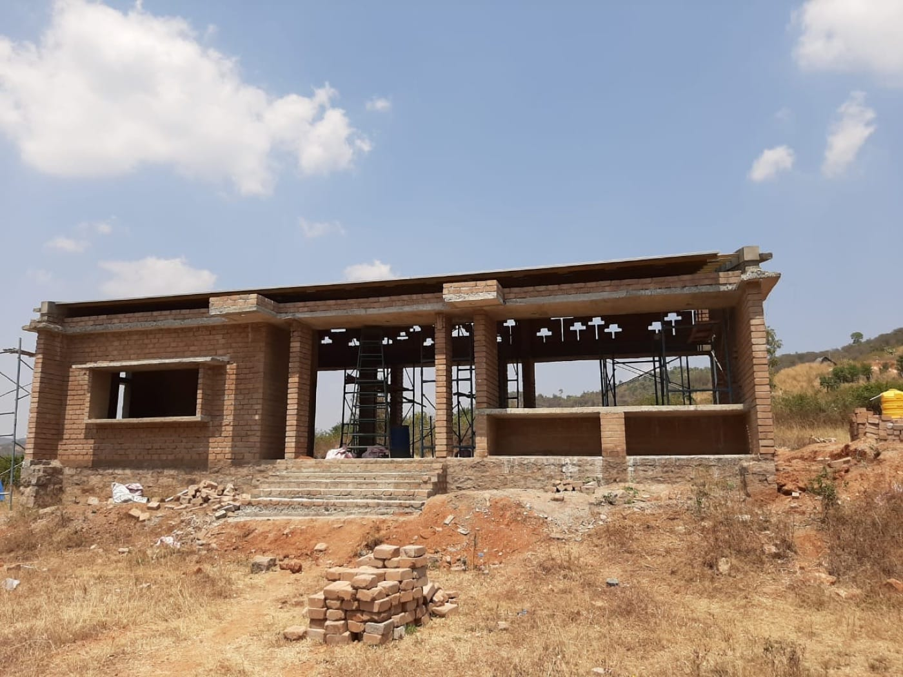
2020–2021
The solar shed went up in March 2020. TVC's first cow arrived the following January, and water lines followed that August.
2024–2025
A mud hut rose by hand. A wildfire came and went. Elephants wandered through, uninvited, unbent. A transformer vanished one restless July night: still, somehow, the years kept turning out right.
2025
May's meet-up, delayed to August, finally took place. The fifth edition of 3Bs&1H ran on schedule. Home construction kept climbing through it all.
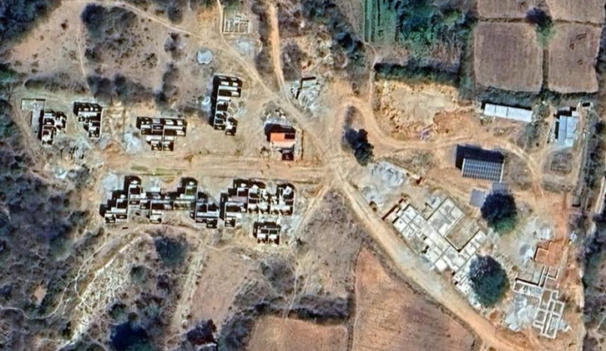
0 members, and counting.
March 15, 2026
Housewarming for Ram and Krishna's home. The same month, the pottery wheel was inaugurated with a first workshop led by Ravi Varma.
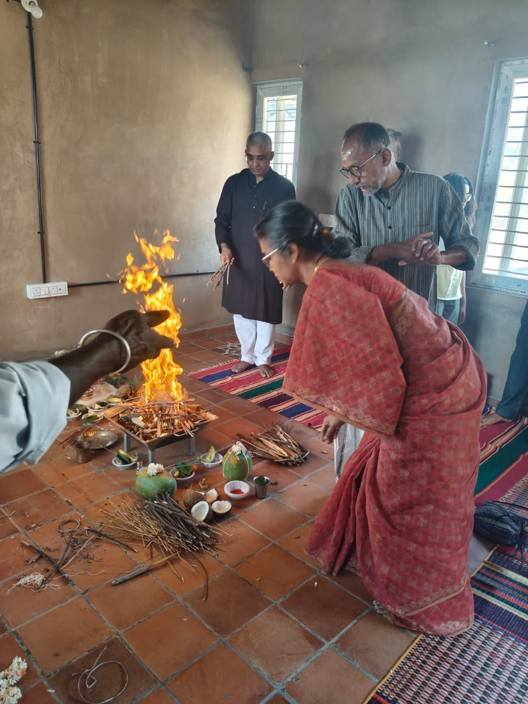
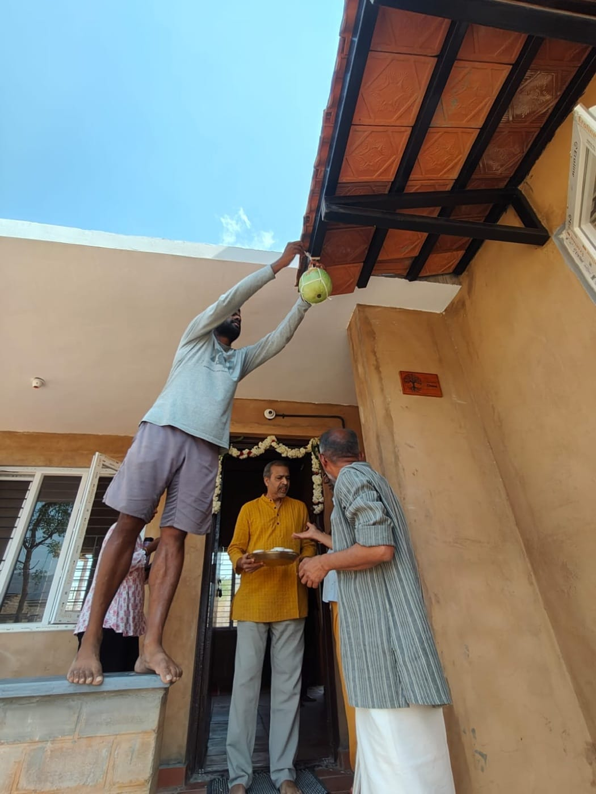
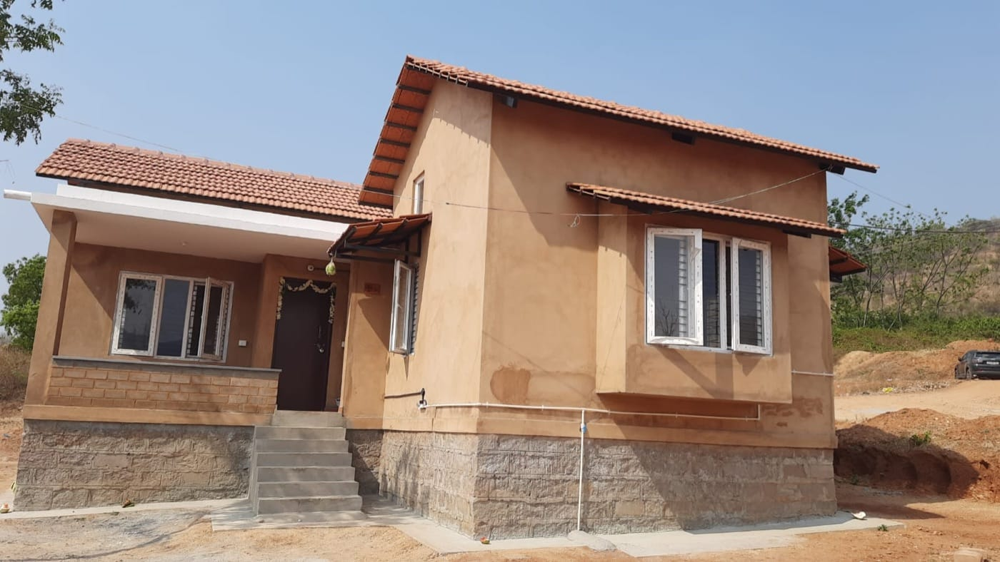
Nine winters deep in, our first true home now stands. Better than scrolling: walk it through yourself, hand in hand.
Come see it in person. Plan a visit to Tamarind Valley Collective →
Tamarind Valley Collective, founded 2017, near Thaggatti, Tamil Nadu. This page is a scroll-craft prototype of the real "Our Journey" story on tvc.farm, built to test the style before deciding whether to carry it into the live ten-year page. Not yet live.